Bien le bonjour
Pour rendre cette candidature respo web un peu amusante, je te propose de faire un petit jeu.
Je vais me présenter en quelques points, et à chaque fois, tu devras trouver un Boris comme lui :
ʕ•ᴥ•ʔ
N'hésite pas à partager ton score :)
Jafar
Je viens de Châteauroux (Oui oui, pour de vrai)
Mais où est donc Châteauroux ? (Au pixel près attention)

Excellent ! Voici ton premier Boris :
Quel est le gentilé de la ville de Châteauroux ?
Bravo ! Tu as réussi. Voici un autre Boris :
Goodbye.